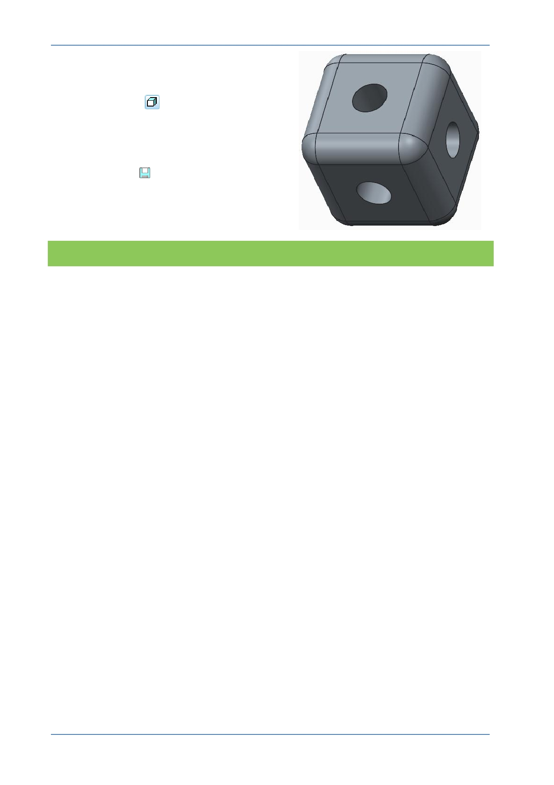

PTC Academic Program
8. Changing the display style and saving
your work:
In the Graphics toolbar, select Shading
with Edges
from the Display Style
types drop-down menu.
9. Saving your work
Click Save
to save your work.
What have you learned?
Engineering feature – Round.
Round dashboard - radius.
Selecting edge references – individual, adding more edges with CTRL key.
Rotating the model.
Edit Definition to re-open and edit existing features.
Saving the model.
© 2012 PTC
Creo Parametric 2.0 Primer
Page 40